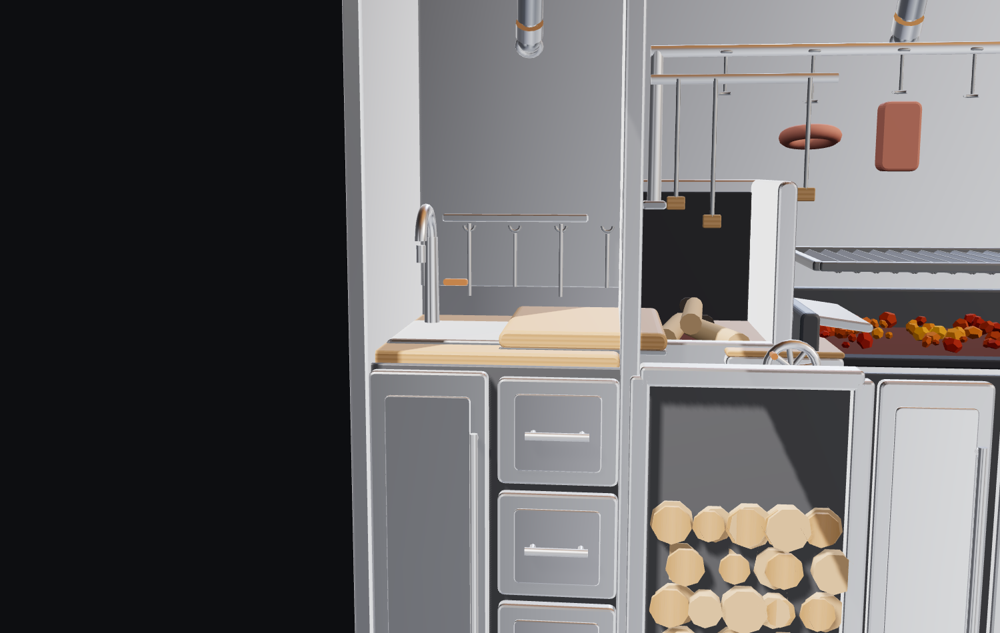

A Shared · ~60 cm
Prep, sink & storage
The landing counter an asador needs beside the fire and the wrap station a pitmaster needs beside the smoker, built as one surface.
- Butcher-block counter, ~92 cm
- Stainless sink + gooseneck
- Cutting board
- Cabinets, drawers, tool hooks